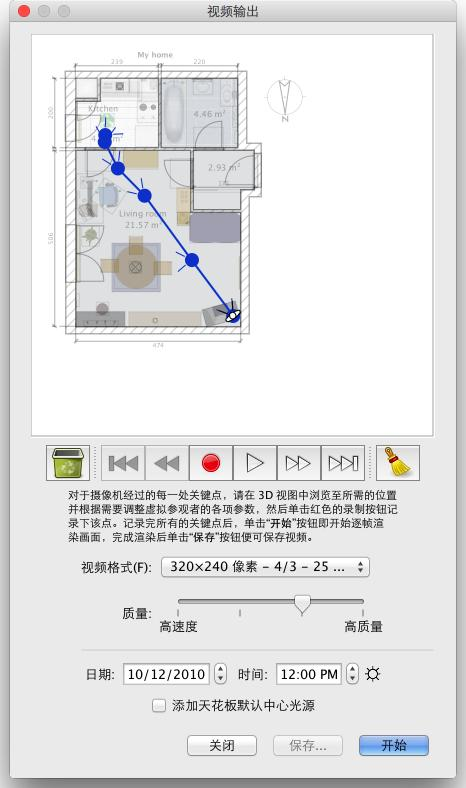

| 产生影片 | |||
去产生您家的3D影片，请选择 3D 视图→产生影片... 选单项目单击在产生影片 工具上。
这将展示一个类似于那个对话框产生 影片。  在这个方格顶上，似乎摄影机的虚拟路径将被拉到你的家的平面图上。 在平面图上，录音、配音、还音和删除按钮帮助你记录照相机道路将经过的点，
配音还音这记录路线或者除去一些路线段。 为了建立录像，在甜蜜的家3D 主要的窗口的3D 图里，选择摄影机的最初位置，
并且在录像创造方格里点击红色按钮开始，然后进入3D视景里，直到摄影机的下一个位置点在红色按钮上再次点击，为安排摄影机在录像期间所经过路径，每个位置再重复这些步骤。
|
|